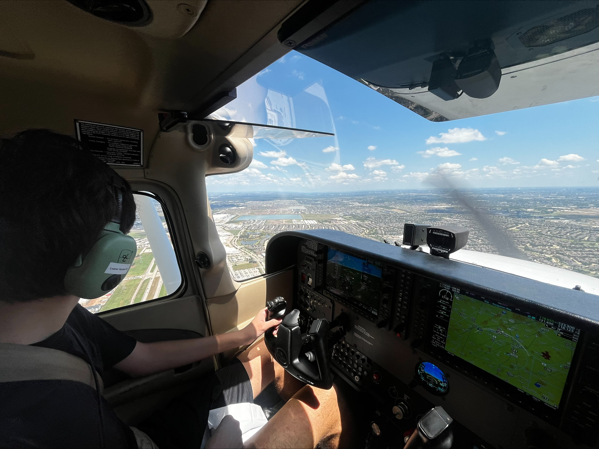

Who I Am

Hi! I’m Alex — I’m 16 years old and originally from Manhattan, New York. I currently live in Houston, and I’m into tennis, swimming, video games, traveling, and spending time outdoors. I have a summer job teaching tennis to kids at Club Westside, which has been an awesome experience. Outside of school, I also fly planes, scuba dive, and ski — I love anything adventurous that gets me moving or exploring. At school, my favorite subjects right now are Math with Mr. Li and Web App Development with Dr. Ramakrishnun. Both classes challenge me and keep me learning new things every day. I built this website as part of a class project, but also because I enjoy creating things and sharing a bit about myself.
My Interests and Hobbies
- Tennis
- Swimming
- Flying planes
- Scuba diving
- Skiing
- Traveling
- Video Games
- Web Development